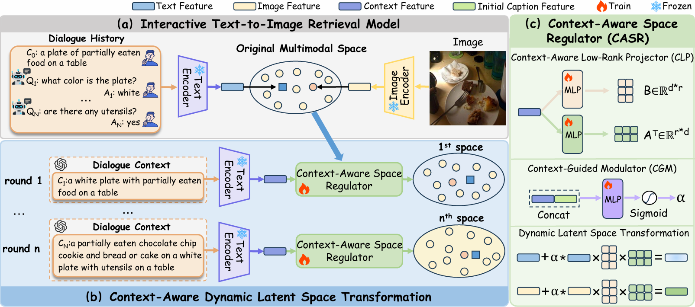
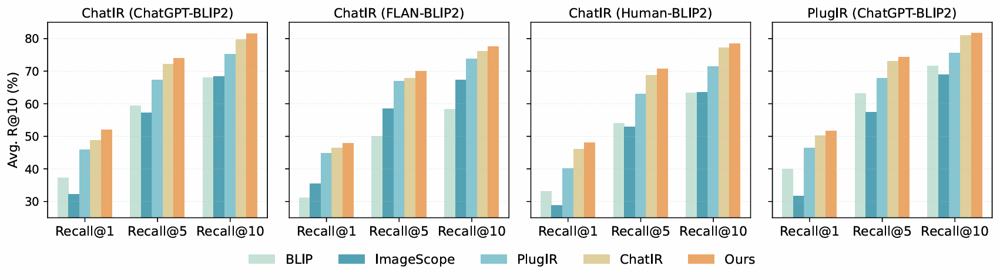
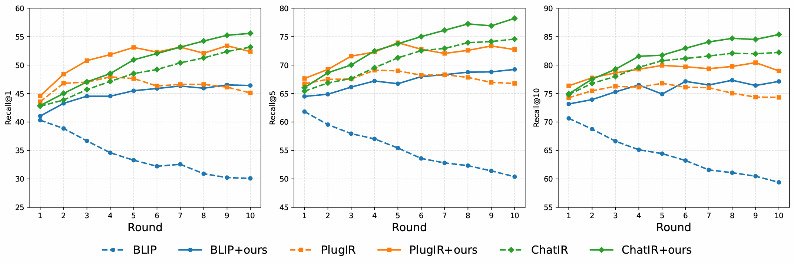
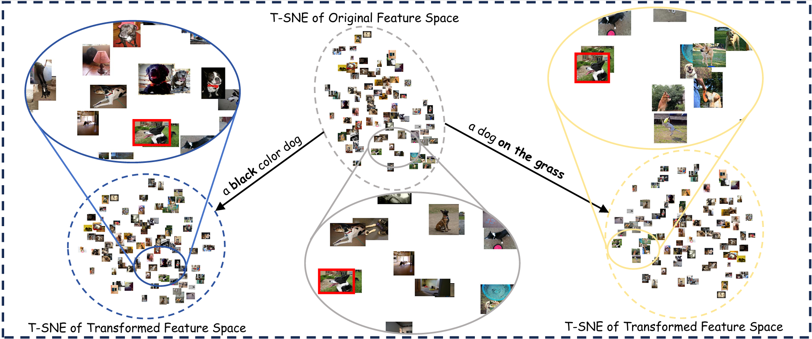

Interactive Text-to-Image Retrieval (I-TIR) aims to refine image retrieval results through natural language dialogues, which allows users to progressively supplement or correct their search intention across multiple rounds, enabling a more precise and user-aligned visual search experience. However, existing methods perform cross-modal retrieval within a fixed multimodal feature space, mapping all dialogue text and images onto the same static embedding manifold. Such a static formulation easily causes semantic vagueness, making it difficult to capture subtle embedding shifts in the user's updated intention for fine-grained retrieval. To address this limitation, we propose Context-Aware Latent Space Transformation (CAST), a lightweight framework that dynamically transforms the common latent space of both textual and visual representations according to the specific evolving user's search intention, enabling fine-grained and adaptive semantic alignment. The core of CAST is the Context-Aware Space Regulator (CASR), a crucial space transformation module composed of two key components: (1) the Context-Aware Low-Rank Projector (CLP), which learns to predict the projection direction of embedding space based on the intent's context; and (2) the Context-Guided Modulator (CGM), which adaptively determines appropriate projection strength. CASR is highly lightweight, adding negligible parameters and computational overhead, and can be seamlessly integrated into diverse I-TIR frameworks. Extensive experiments demonstrate the effectiveness of our proposed framework, indicating that it can serve as a general, plug-and-play solution for efficient and scalable interactive text-to-image retrieval.

Despite recent progress in interactive retrieval, most existing frameworks operate within a static multimodal feature space, assuming that the relationship between text and images remains fixed across all dialogue rounds. However, interactive retrieval is inherently dynamic: each user response provides new semantic constraints that refine and reshape the retrieval intent. When the feature space itself remains unchanged, these evolving semantics are merely projected into the same embedding geometry, causing the query to drift without truly reflecting the updated intent. As a result, subtle contextual cues such as newly mentioned attributes or refined object relations are easily lost in static representations. This limitation motivates a new perspective: each dialogue round should act as a contextual modulation step that dynamically transform the multimodal representation space according to the current intent contexts. By allowing both textual and visual embeddings to evolve in response to dialogue context, the retrieval system can continuously refocus on semantically relevant regions, achieving finer-grained alignment and more faithful modeling of user intent.




This work was supported by the National Key Research and Development Program of China (No. 2023YFC3304902), Pioneer and Leading Goose R&D Program of Zhejiang (No. 2024C01110), National Natural Science Foundation of China (No. 62472385, 62306278), Young Elite Scientists Sponsorship Program by China Association for Science and Technology (No. 2022QNRC001), Fundamental Research Funds for the Provincial Universities of Zhejiang (No. FR2402ZD) and Tongxiang Institute of Artificial General Intelligence (No. TAGI2-B-2024-0004).
@inproceedings{lin2026cast,
title = {CAST: Context-Aware Latent Space Transformation for Interactive Text-to-Image Retrieval},
author = {Lin, Xuanzuo and Zhang, Min and Liu, Daizong and Zuo, Zhiwen and Yang, Xun and Lin, Changting and Wang, Xun and Dong, Jianfeng},
booktitle = {Proceedings of the IEEE/CVF Conference on Computer Vision and Pattern Recognition (CVPR)},
year = {2026}
}